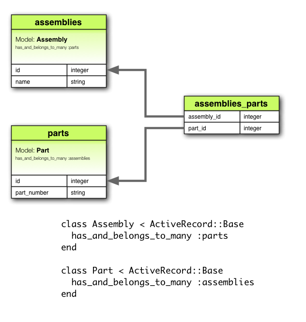

Ruby (on Rails)
Jesen weba i dizajna
Elektrotehnički fakultet Osijek12/12/12
Vlado Cingel
vlado@cingel.hr
Cingel d.o.o.
Čačinci
?
Freelancer
A person who sells services to employers without a long-term commitment to any of them
Ali to nije tema naše današnje emisije...
- Ruby A programmer's best friend
- Rack Minimal interface between webservers supporting Ruby and Ruby frameworks
- Rails Web development that doesn't hurt
Ruby
Yukihiro Matsumoto
“matz”
1995
I wanted to design my own language to maximize my freedom
I wanted to design a language in which I could love programming
Matz
Sve je objekt
http://objectgraph.rubyforge.org/dotOG.html
I wanted a scripting language that was more powerful than Perl, and more object-oriented than Python
5.times { print "Ruby" }
Ruby
- Hello World!
- Specifičnosti
- RubyGems
Rack
Rack
Minimal interface between webservers supporting Ruby and Ruby frameworks
David Heinemeier Hansson
"dhh"
2003
Rails
Ruby on Rails is an open-source web framework that's optimized for programmer happiness and sustainable productivity. It lets you write beautiful code by favoring convention over configuration
Rails
- puno posla sa malo koda
- čini razvoj zabavnim
- "tvrdoglav" framework
Rails Way
- DRY Don't Repeat Yourself
- Convention over configuration
- REST Representational State Transfer
MVC arhitektura
Model, View, Controller
Model
- prezentira podatke s kojima radite
- primarno baza podataka (ali ne isključivo)
- jedan model prezentira jednu tablicu u bazi
- sav "business logic" nalazi se u modelima"
View
- user interface (sučelje)
- ERB templates najčešće
- HTML, XML, JSON, JavaScript, ...
Controller
- povezuje Model i View
- web request -> dohvaća podatke -> prosljeđuje ih
Komponente
- ActionPack
- ActionController
procesuira requestove, izvlači parametre i šalje ih akcijama koje ih trebaju, session management, render templejtova, redirekcije - ActionView
odogovoran je za ispis, generira html, xml, json, ... - ActionDispatch
odgovoran je za ruting web requestova i dispačiranje do aplikacije ili nekog drugog middlewarea
- ActionController
- ActionMailer
zadušen za generiranje i slanje mailova - ActiveRecord
ORM adapter, database independent, CRUD funkcionalnost, napredni finderi, relacije između modela - ActiveResource
definiranje modela iz RESTful web servisa - ActiveSupport
skupina korisnih utility metoda i core extensiona - Railties
core Rails code odogovran za dizanje aplikacije, povezuje ostale dijelove zajedno
Rails
primjer
ActiveRecord - Validations
Zadaća validacije
class Person < ActiveRecord::Base
end
p = Person.new(:name => "Vlado Cingel")
p.persisted? # false
p.save # true
p.persisted? # true
ActiveRecord - Validations
Kada se događa validacija?
- create
- create!
- save
- save!
- update
- update_attributes
- update_attributes!
ActiveRecord - Validations
valid? / invalid?
class Person < ActiveRecord::Base
validates :name, :presence => true
end
Person.create(:name => "Vlado Cingel").valid? # => true
Person.create(:name => nil).valid? # => false
Person.create(:name => "Vlado Cingel").invalid? # => false
Person.create(:name => nil).invalid? # => true
ActiveRecord - Validations
Errors
class Person < ActiveRecord::Base
validates :name, :presence => true
end
p = Person.new
p.errors # {}
p = Person.create
p.errors # {:name=>["can't be blank"]}
p.errors[:name] # ["can't be blank"]
ActiveRecord - Validations
Helpers
ActiveModel::Validations::HelperMethods
+ Custom validations
ActiveRecord - Callbacks
Definiranje
class User < ActiveRecord::Base
validates :login, :email, :presence => true
before_create do |user|
user.name = user.login.capitalize if user.name.blank?
end
end
false ili exception otkazuju akciju i aktiviraju rollback
ActiveRecord - Callbacks
Novi objekt
- before_validation
- after_validation
- before_save
- around_save
- before_create
- around_create
- after_create
- after_save
ActiveRecord - Callbacks
Postojeći objekt
- before_validation
- after_validation
- before_save
- around_save
- before_update
- around_update
- after_update
- after_save
ActiveRecord - Callbacks
Brisanje objekta
- before_destroy
- around_destroy
- after_destroy
ActiveRecord - Callbacks
Ostali
- after_initialize
- after_find
- after_commit
- after_rollback
ActiveRecord - Associations
Asociacija je veza između dva Active Record modela
Tipovi asocijacija
- belongs_to
- has_one
- has_many
- has_many :through
- has_one :through
- has_and_belongs_to_many
ActiveRecord - Associations
belongs_to
ActiveRecord - Associations
has_one
ActiveRecord - Associations
has_many
ActiveRecord - Associations
has_many :through
ActiveRecord - Associations
has_one :through
ActiveRecord - Associations
has_and_belongs_to_many
ActiveRecord - Associations
Polymorphic Associations
Model može pripadati (belongs_to) više nego jednom modelu
ActiveRecord - Query interface
Dohvat iz baze
Finder methods
- where
- select
- group
- order
- reorder
- reverse_order
- limit
- offset
- joins
- includes
- lock
- readonly
- from
- having
ActiveRecord - Query interface
Dohvat pojedinog objekta
Client.find(10)
# => SELECT * FROM clients WHERE (clients.id = 10) LIMIT 1
ActiveRecord - Query interface
Dohvat pojedinog objekta
Client.first
# => SELECT * FROM clients LIMIT 1
ActiveRecord - Query interface
Dohvat pojedinog objekta
Client.last
# => SELECT * FROM clients ORDER BY clients.id DESC LIMIT 1
ActiveRecord - Query interface
Dohvat više objekata od jednom
Client.find(1, 10)
# => SELECT * FROM clients WHERE (clients.id IN (1,10))
ActiveRecord - Query interface
Uvjeti - String
Client.where("orders_count = 2")
# => SELECT * FROM clients WHERE (orders_count = 2)
ActiveRecord - Query interface
Uvjeti - Array
Client.where("orders_count = ? AND locked = ?", 2, false)
# => SELECT * FROM clients WHERE (orders_count = 2 AND locked = 'f')
Client.where("orders_count = :count AND locked = :locked", {:count => 2, :locked => false})
# => SELECT * FROM clients WHERE (orders_count = 2 AND locked = 'f')
ActiveRecord - Query interface
Uvjeti - Hash
Client.where(:orders_count => 2)
# => SELECT * FROM clients WHERE (orders_count = 2)
Client.where(:orders_count => 2, :locked => false)
# => SELECT * FROM clients WHERE (orders_count = 2 AND locked = 'f')
Client.where(:orders_count => 2).where(:locked => false)
# => SELECT * FROM clients WHERE (orders_count = 2 AND locked = 'f')
ActiveRecord - Query interface
Uvjeti - Hash
Client.where(:created_at => (Time.now.midnight - 1.day)..Time.now.midnight)
# => SELECT * FROM clients WHERE (clients.created_at BETWEEN '2012-12-11 00:00:00' AND '2012-12-12 00:00:00')
Client.where(:orders_count => [1,3,5])
# => SELECT * FROM clients WHERE (clients.orders_count IN (1,3,5))
ActiveRecord - Query interface
Order
Client.order("created_at")
# => SELECT * FROM clients ORDER BY created_at
Client.order("orders_count ASC, created_at DESC")
# => SELECT * FROM clients ORDER BY orders_count ASC, created_at DESC
ActiveRecord - Query interface
Select
Client.select("viewable_by, locked")
# => SELECT viewable_by, locked FROM clients
ActiveRecord - Query interface
Limit, Offset
Client.limit(5)
# => SELECT * FROM clients LIMIT 5
Client.limit(5).offset(30)
# => SELECT * FROM clients LIMIT 5 OFFSET 30
ActiveRecord - Query interface
Joins
Client.joins('LEFT OUTER JOIN addresses ON addresses.client_id = clients.id')
# => SELECT clients.* FROM clients LEFT OUTER JOIN addresses ON addresses.client_id = clients.id
ActiveRecord - Query interface
Joins
class Category < ActiveRecord::Base
has_many :posts
end
class Post < ActiveRecord::Base
belongs_to :category
has_many :comments
has_many :tags
end
class Comment < ActiveRecord::Base
belongs_to :post
has_one :guest
end
class Guest < ActiveRecord::Base
belongs_to :comment
end
class Tag < ActiveRecord::Base
belongs_to :post
end
Category.joins(:posts)
# => SELECT categories.* FROM categories
INNER JOIN posts ON posts.category_id = categories.id
ActiveRecord - Query interface
Joins - multiple associations
Post.joins(:category, :comments)
# => SELECT posts.* FROM posts
INNER JOIN categories ON posts.category_id = categories.id
INNER JOIN comments ON comments.post_id = posts.id
Joins - nested associations
Post.joins(:comments => :guest)
# => SELECT posts.* FROM posts
INNER JOIN comments ON comments.post_id = posts.id
INNER JOIN guests ON guests.comment_id = comments.id
ActiveRecord - Query interface
Joins - Conditions
time_range = (Time.now.midnight - 1.day)..Time.now.midnight
Client.joins(:orders).where('orders.created_at' => time_range)
Client.joins(:orders).where(:orders => {:created_at => time_range})
ActiveRecord - Query interface
Scopes
class Post < ActiveRecord::Base
scope :published, where(:published => true)
end
Post.published
# => SELECT * FROM posts WHERE (published = 't')
ActiveRecord - Query interface
Scopes
class Post < ActiveRecord::Base
scope :before, lambda { |t| where("created_at < ?", t) }
end
Post.before(Time.zone.now)
ActiveRecord - Query interface
Dynamic finders
- find_by_*
- find_first_by_*
- find_last_by_*
- find_all_by_*
Getting started
- http://guides.rubyonrails.org/
- http://railscasts.com
HVALA :)
vlado@cingel.hr